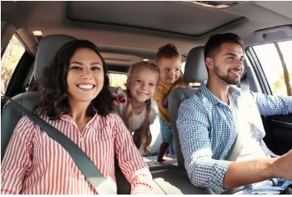

Speaking Test 10 (lần đọc cuốn sách hay) (12’)
Part 1: In this part, I am going to ask you three short questions about yourself and your interests. You will have 30 seconds to reply to each question.
What is the best way to travel in your country? – the best way to travel in my country is buy motorbike because it is fast and cheap. Many people in my city ride motorbikes to work every morning. It is also easy to park a motorbike in small streets.
What do people in your country like to read? – people in my country like to read newspapers because it is enjoyable and useful. They can relax and update information. Some newspapers also have interesting stories about sports and famous people. My father reads one every morning with his coffee.
Describe your journey here today. – Today I came here by car because I live far from here. It took me 2 hours to come here. The traffic was heavy today. I left home very early this morning to avoid being late. Next time, I might try taking the bus instead.
Part 2: In this part, I'm going to ask you to describe a picture. Then I will ask you two questions about it. You will have 45 seconds for each response.
 |
|
|---|---|
Tell about a time when you went somewhere in a car - Yesterday I went to Halong Bay by car. I went with my friends. During the trip, we talked happily. We stopped to take some photos of the sea along the way. It was a really enjoyable day trip.
Do you think people should learn to drive? Why and why not? - People should learn how to drive because it is really convenient. They can go anywhere they like so they can save a lot of time. It can also be useful in emergencies when public transport is not available. However, they should always drive carefully and follow traffic rules.
Part 3: In this part, I'm going to ask you to compare two pictures, and I will then ask you two questions about them. You will have 45 seconds for each response.
The two pictures show people enjoying music in different places
There are some differences between the two pictures
Picture 1 shows many people in a concert while picture 2 shows a man at home
The people in picture 1 are listening to live music but the man in picture 2 is listening to music from a CD.
There are some similarities between the two pictures.
People in both picture are wearing casual clothes and they love music
I prefer picture 1 because I love live music. The atmosphere at a concert always makes me feel excited. I enjoy singing along with the crowd too.
I myself prefer listening to music at home because it is relaxing and quiet. I don’t like noisy and crowded places. I often listen to music while reading a book in my free time. It helps me feel calm after a stressful day.
Part 4: In this part, I'm going to show you a picture and ask you three questions. You will have one minute to think about your answers before you start speaking. You will have two minutes to answer all three questions.
Tell me about a time you read a good book
How did you feel?
Some people love watching films more than reading books. What do you think?
I felt so relaxed. I laughed from the beginning to the end
|
|---|